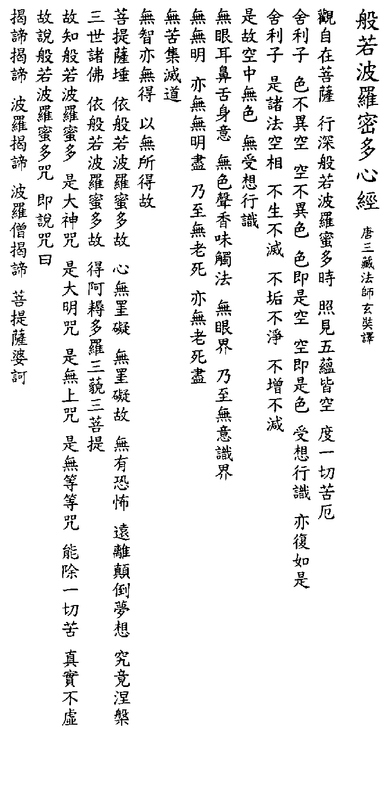

BuddhaSasana
Home Page
This document is written in
Vietnamese, with Unicode Times font
Bát Nhã Ba La Mật ÐaTâm Kinh
Bình Anson
Bát Nhã Ba La Mật Ða Tâm Kinh (Prajnaparamitahridaya Sutra) là một trong các kinh căn bản và phổ thông của Phật Giáo Ðại Thừa. Bài kinh nầy là một trong các bài kinh của bộ Bát Nhã kết tập tại Ấn Ðộ qua bảy thế kỷ, từ năm 100 T.C.N. đến 600 C.N. Khi được truyền sang Trung Hoa, Tâm Kinh đã được nhiều vị cao tăng chuyển dịch từ tiếng Phạn sang tiếng Hán: ngài Cưu Ma La Thập dịch vào khoảng năm 402-412 C.N., ngài Huyền Trang dịch năm 649 C.N., ngài Nghĩa Huyền (700 C.N.), ngài Pháp Nguyệt (732 C.N.), ngài Bát Nhã và Lợi Ngôn (790 C.N.), ngài Trí Tuệ Luận (850 C.N.), ngài Pháp Thành (856 C.N.) và ngài Thi Hộ (980 C.N.). Trong các bản dịch nầy, bản dịch của ngài Huyền Trang là phổ thông nhất.
Riêng tại Việt Nam, bản dịch của ngài Huyền Trang được chuyển sang chữ quốc ngữ Hán Việt và thường dùng để trì tụng hằng ngày. Quý vị cao tăng cũng có phát hành nhiều sách để giải thích nghĩa kinh, trong đó các sách của quý Hòa thượng Thích Thiện Hoa, Thích Thanh Từ, và Thích Nhất Hạnh là phổ thông nhất.
Sau đây là một số bài dịch Việt-Anh của Tâm Kinh mà tôi đã sưu tầm trong thời gian qua.
-ooOoo-
Bản tụng Hán Việt:
Quán Tự Tại Bồ Tát hành thâm Bát nhã Ba la mật đa thời, chiếu kiến ngũ uẩn giai không, độ nhứt thiết khổ ách.
Xá Lợi Tử, sắc bất dị không, không bất dị sắc, sắc tức thị không, không tức thị sắc, thọ tưởng hành thức diệc phục như thị.
Xá Lợi Tử, thị chư pháp không tướng, bất sanh bất diệt, bất cấu bất tịnh, bất tăng bất giảm.
Thị cố không trung vô sắc, vô thọ tưởng hành thức.
Vô nhãn nhĩ tỷ thiệt thân ý, vô sắc thanh hương vị xúc pháp, vô nhãn giới nãi chí vô ý thức giới.
Vô vô minh, diệc vô vô minh tận, nãi chí vô lão tử, diệc vô lão tử tận.
Vô khổ, tập, diệt, đạo.
Vô trí diệc vô đắc, dĩ vô sở đắc cố.
Bồ đề tát đõa y Bát nhã Ba la mật đa cố, tâm vô quái ngại, vô quái ngại cố, vô hữu khủng bố, viễn ly điên đảo mộng tưởng, cứu cánh Niết bàn.
Tam thế chư Phật, y Bát nhã Ba la mật đa cố, đắc A nậu đa la Tam miệu Tam bồ đề.
Cố tri Bát nhã Ba la mật đa, thị đại thần chú, thị đại minh chú, thị vô thượng chú, thị vô đẳng đẳng chú, năng trừ nhất thiết khổ, chân thật bất hư.
Cố thuyết Bát nhã Ba la mật đa chú, tức thuyết chú viết:Yết đế yết đế, ba la yết đế, ba la tăng yết đế, bồ đề tát bà ha.
-ooOoo-
Bản dịch nghĩa:
Ngài Bồ Tát Quán Tự Tại khi thực hành thâm sâu về trí tuệ Bát Nhã Ba la mật, thì soi thấy năm uẩn đều là không, do đó vượt qua mọi khổ đau ách nạn.
Nầy Xá Lợi Tử, sắc chẳng khác gì không, không chẳng khác gì sắc, sắc chính là không, không chính là sắc, thọ tưởng hành thức cũng đều như thế.
Nầy Xá Lợi Tử, tướng không của các pháp ấy chẳng sinh chẳng diệt, chẳng nhơ chẳng sạch, chẳng thêm chẳng bớt.
Cho nên trong cái không đó, nó không có sắc, không thọ tưởng hành thức.
Không có mắt, tai, mũi, lưỡi, thân ý. Không có sắc, thanh, hương vị, xúc pháp. Không có nhãn giới cho đến không có ý thức giới.
Không có vô minh,mà cũng không có hết vô minh. Không có già chết, mà cũng không có hết già chết.
Không có khổ, tập, diệt, đạo.
Không có trí cũng không có đắc, vì không có sở đắc.
Khi vị Bồ Tát nương tựa vào trí tuệ Bát Nhã nầy thì tâm không còn chướng ngại, vì tâm không chướng ngại nên không còn sợ hãi, xa lìa được cái điên đảo mộng tưởng, đạt cứu cánh Niết Bàn.
Các vị Phật ba đời vì nương theo trí tuệ Bát Nhã nầy mà đắc quả vô thượng, chánh đẳng chánh giác.
Cho nên phải biết rằng Bát nhã Ba la mật đa là đại thần chú, là đại minh chú, là chú vô thượng, là chú cao cấp nhất, luôn trừ các khổ não, chân thật không hư dối.
Cho nên khi nói đến Bát nhã Ba la mật đa, tức là phải nói câu chú:Yết đế yết đế, ba la yết đế, ba la tăng yết đế, bồ đề tát bà ha.
(Qua rồi qua rồi, qua bên kia rồi, tất cả qua bên kia rồi, giác ngộ rồi đó!)-ooOoo-
Bản phổ thơ:
(Thích Nhất Hạnh)Bồ Tát Quán Tự Tại
Khi quán chiếu thâm sâu
Bát Nhã Ba La Mật
(tức Diệu Pháp Trí Ðộ)
Bổng soi thấy năm uẩn
Ðều không có tự tánh
Thực chứng điều ấy xong
Ngài vượt thoát tất cả
Mọi khổ đau ách nạn.Nghe đây Xá Lợi Tử:
Sắc chẳng khác gì không
Không chẳng khác gì sắc
Sắc chính thực là không
Không chính thực là sắc
Còn lại bốn uẩn kia
Cũng đều như vậy cả.Xá Lợi Tử nghe đây:
Thể mọi pháp đều không
Không sanh cũng không diệt
Không nhơ cũng không sạch
Không thêm cũng không bớt
Cho nên trong tánh không
Không có sắc, thọ, tưởng
Cũng không có hành thức
Không có nhãn, nhĩ, tỷ
Thiệt, thân, ý (sáu căn)
Không có sắc, thanh, hương
Vị, xúc, pháp (sáu trần)
Không có mười tám giới
Từ nhãn đến ý thức
Không hề có vô minh
Không có hết vô minh
Cho đến không lão tử
Cũng không hết lão tử
Không khổ, tập, diệt, đạo
Không trí cũng không đắcVì không có sở đắc
Khi một vị Bồ Tát
Nương Diệu Pháp Trí Ðộ
(Bát Nhã Ba La Mật)
Thì tâm không chướng ngại
Vì tâm không chướng ngại
Nên không có sợ hãi
Xa lià mọi vọng tưởng
Xa lìa mọi điên đảo
Ðạt Niết Bàn tuyệt đốiChư Bụt trong ba đời
Y Diệu Pháp Trí Ðộ
Bát Nhã Ba La Mật
Nên đắc vô thượng giác
Vậy nên phải biết rằng
Bát Nhã Ba La Mật
Là linh chú đại thần
Là linh chú đại minh
Là linh chú vô thượng
Là linh chú tuyệt đỉnh
Là chân lý bất vọng
Có năng lực tiêu trừ
Tất cả mọi khổ nạnCho nên tôi muốn thuyết
Câu thần chú Trí Ðộ
Bát Nhã Ba La Mật
Nói xong đức Bồ Tát
Liền đọc thần chú rằng:Yết đế, Yết đế
Ba la Yết đế
Ba la Tăng yết đế
Bồ đề tát bà ha-ooOoo-
Phổ thơ lục bát:
(Ðây là một bài phổ thơ mà tôi học được từ một vị tu sĩ thuộc hệ phái Khất Sĩ)Khi hành Bát Nhã Ba La
Ngài Quán Tự Tại soi ra tột cùng
Thấy ra năm uẩn đều Không
Bao nhiêu khổ ách khốn cùng độ quaNầy Xá Lợi Tử xét ra
Không là sắc đó, sắc là không đây
Sắc cùng không chẳng khác sai
Không cùng sắc vẫn sánh tài như nhau
Thọ, tưởng, hành, thức uẩn nào,
Cũng như sắc uẩn ,một màu không khôngNầy Xá Lợi Tử ghi lòng
Không không tướng ấy, đều không tướng hình
Không tăng giảm, không trược thanh
Cũng không diệt, cũng không sanh pháp đồng
Vậy nên trong cái chơn không
Vốn không năm uẩn, cũng không sáu trần
Mắt, tai, mũi, lưỡi, ý, thân
Vị, hương, xúc, pháp, cùng phần sắc, thinh
Từ không giới hạn mắt nhìn
Ðến không ý thức, vô minh cũng đồng
Hết vô minh, cũng vẫn không
Hết già, hết chết, cũng không có gì
Không khổ, tập, diệt, đạo kia
Trí huệ chứng đắc cũng là không khôngSở thành, sở đắc bởi không
Các vì Bồ Tát nương tùng huệ năng
Tâm không còn chút ngại ngăn
Nên không còn chút băng khoăng sợ gì
Ðảo điên mộng tưởng xa lìa
Niết Bàn mới đến bên kia bến bờBa đời chư Phật sau, xưa
Ðắc thành Chánh Giác cũng nhờ huệ năng
Trí huệ năng lực vô ngần
Ðại Minh vô thượng, Ðại Thần cao siêu
Trí huệ năng lực có nhiều
Thật là thần chú trừ tiêu não phiền
Trí huệ năng lực vô biên
Dẫn đường giải thoát qua bên giác ngàn
Liền theo lời chú thuyết rằng:
Ðộ tha giác ngộ khắp trần chúng sanh.Yết đế, yết đế
Ba la yết đế
Ba la tăng yết đế
Bồ đề Tát bà ha
-ooOoo-
Bản dịch Việt:
(Thích Tâm Thiện, Sài Gòn, 1998)Kinh Trái Tim Tuệ Giác Vô Thượng
1. Khi tiến sâu vào nguồn mạch của Tuệ giác vô thượng (1), Người Tỉnh Thức Bình Yên (2) soi sáng như thật rằng tự tịnh của năm hợp thể (3) đều là Không (4), liền thoát ly mọi khổ ách.
2. Này người con dòng Sari (5), hình thể chẳng khác chân không, chân không chẳng khác hình thể. Hình thể là chân không, chân không là hình thể. Cảm xúc (6), niệm tự (7) và tư duy (8) và ý thức (9) đều là như vậy.
3. Này người con dòng Sari, tất cả hiện hữu được biểu thị là Không, nó không sanh, không diệt, không nhơ, không sạch, không tăng, không giảm.
4. Vì thế, này người con dòng Sari, trong Không không có hình thể, không có cảm xúc, không có niệm lự, không có tư duy, không có ý thức (10); không có mắt, tai, mũi, lưỡi, thân và ý; không có hình thể, âm thanh, hương khí, mùi vị, xúc chạm (11) và hiện hữu (12). Không có đối đượng của mắt, cho đến không có đối tượng của ý thức; không có minh, không có vô minh (13), không có sự chấm dứt của minh, cũng không có sự chấm dứt của vô minh; cho đến, không có tuổi già và sự chết, cũng không có sự chấm dứt của tuổi già và sự chết; không có khổ đau, không có nguyên nhân của khổ đau, không có sự chấm dứt khổ đau và không có con đuuờng đưa đến sự chấm dứt khổ đau (14); không có tri giác (15) cũng không có sự thành tựu tri giác, vì chăng có quả vị của tri giác nào để thành tựu.
5. Người Tỉnh Thức Bình Yên, do sống an lành trong Tuệ giác vô thượng mà thoát ly tất cả chướng ngại. Và rằng, vì không có những chướng ngại trong tâm nên không có sợ hãi và xa rời những cuồng si mộng tưởng, cứu cánh Niết bàn.
6. Tất cả chư Phật trong ba đời (16) đều nương tựa vào Tuệ giác vô thượng mà thành tựu (17) chánh giác.
7. Vì thế, nên biết rằng Tuệ giác vô thượng là sức thần (18) kỳ vĩ, là sức thần của trí tuệ vĩ đại, là sức thần cao tuyệt, là sức thần tối hậu, vô song, có thể trừ diệt tất cả khổ đau. Sức thần thoắt sinh từ Tuệ giác vô thượng này là sự thật, là chân lý. Sức thần có năng lực tối thượng đó được tuyên nói trong kinh Trái Tim Tuệ Giác Vô Thượng rằng:
"Ði qua, đi qua
Ði qua bờ bên kia,
Ðã đi qua đến bờ bên kia, reo vui!"Chú thích:
(1) Trí tuệ Bát nhã (Prajnàpàramità).
(2) Dịch từ "Quán Tự Tại" theo cách chiết tự.
(3) Năm tổ hợp hay năm uẩn (skandhas).
(4) Vô tự tính hay bản tính Không (Sunyata).
(5) Mẹ của Sariputa là người rất thông minh nên có hiệu là Sari. Trung Hoa dịch chữ Sariputa là Xá Lợi tử, nghĩa là, đứa con dòng Xá Lợi (Sari). Do đó, tác giả dịch là Người con dòng Sari, lối dịch này đã được sử dụng trong bản dịch "Kinh Ruột Tuệ Giác Siêu Việt" của Thi Vũ, do HT. Trí Quang giới thiệu, xuất bản năm 1973, tại Paris.(6) Thọ uẩn
(7) Tưởng uẩn
(8) Hành uẩn
(9) Thức uẩn
Bốn uẩn (hợp thể) này thuộc về tâm lý, sắc uẩn (hợp thể vật chất) thuộc về vật lý.(10) Sắc, thọ, tưởng, hành, thức (5 uẩn).
(11) Xúc (trong sắc, thanh, hương, vị, xúc, pháp).
(12) Hiện hữu đọc được dùng đồng nghĩa với pháp (dharma).
(13) Vô minh (ignorance), nguồn gốc của sự khổ đau.
(14) Tứ đế (Khổ đế, Tập đế, Diệt đế, Ðạo đế).
(15) Tri giác (dịch từ Vô tri diệc vô đắc).
(16) Ba đời: quá lhứ, hiện tại, vị lai.
(17) Thành tựu ở đây có nghĩa là đã giải thoát khỏi thế giới nhị nguyên, không còn phân biệt, đối đãi nhân-pháp, hữu-vô v.v...
(18) Còn được dịch là linh ngữ hay thần chú (mantra).-ooOoo-
Bản phổ thơ Anh ngữ:
(cung cấp bởi: Laurence Cox - lcox@alf2.tcd.ie , Trinity College, Dublin, Ireland)THE HEART SUTRA
The Bodhisattva of Compassion,
when he meditated deeply,
saw the emptiness of all five skandhas
and sundered the bonds that caused him suffering.Here then,
form is no other than emptiness,
emptiness no other than form.Form is only emptiness,
emptiness only form.
Feeling, thought and choice,
consciousness itself,
are the same as this.All things are the primal void,
which is not born or destroyed,
nor is it stained or pure,
nor does it wax or wane.So, in emptiness, no form,
no feeling, thought or choice,
nor is there consciousness.
No eye, ear, nose, tongue, body, mind.
No colour, sound, smell,
taste, touch or what the mind takes hold of,
nor even act of sensing.No ignorance nor all that comes of it,
no withering, no death,
no end of them.Nor is there pain, or cause of pain,
or cease in pain,
or noble path to lead from pain,
nor even wisdom to attain.
Attainment too is emptiness!So know that the Bodhisattva,
holding to nothing whatever
but dwelling in prajna wisdom,
is freed from delusive hindrance,
rid of the fears bred by it,
and reaches clearest Nirvana.All Buddhas of past and present,
Buddhas of future time,
Using this prajna wisdom
Attain full and perfect enlightenment.Hear then the great dharani,
the radiant peerless mantra,
the prajnaparamita
whose words allay all pain,
hear and believe its truth!Gate Gate Paragate Parasamgate Bodhi Svaha
-ooOoo-
Bản dịch Anh ngữ:
(cung cấp bởi: Raja Hornstein, devaraja@well.com )GREAT WISDOM BEYOND WISDOM HEART SUTRA
Avalokiteshvara Bodhisattva, when practicing deeply the Prajna Paramita, perceived that all five skandhas in their own being are empty and was saved from all suffering.
O Shariputra, form does not differ from emptiness; emptiness does not differ from form. That which is form is emptiness; that which is emptiness form. The same is true of feelings, perceptions, formations, consciousness.
O Shariputra, all dharmas are marked with emptiness. they do not appear nor disappear, are not tainted nor pure, do not increase nor decrease. Therefore in emptiness: no form, no feelings, no perceptions, no formations, no consciousness; no eyes, no ears, no nose, no tongue, no body, no mind; no color, no sound, no smell, no taste, no touch, no object of mind; no realm of eyes...until no realm of mind-consciousness; no ignorance and also no extinction of it...until no old-age and death and also no extinction of it; no suffering, no origination, no stopping, no path, no cognition, also no attainment with nothing to attain.
A bodhisattva depends on Prajna Paramita and the mind is no hindrance. Without any hindrance no fears exist. Far apart from every perverted view one dwells in nirvana. In the three worlds all buddhas depend on Prajna Paramita and attain unsurpassed complete perfect enlightenment. Therefore, know the Prajna Paramita is the great transcendent mantra, is the great bright mantra, is the utmost mantra, is the supreme mantra which is able to relieve all suffering and is true not false; so proclaim the Prajna Paramita mantra, proclaim the mantra that says:
Gate Gate Paragate Parasamgate Bodhi Svaha
-ooOoo-
Bản dịch Anh ngữ:
(Trúc Huy, truc_huy@yahoo.com, tháng 10-1999)Heart of Perfect Wisdom
The Bodhisattva Avalokitesvara, from the deep course of Prajna wisdom, saw clearly that all five skandhas were empty and sundered all bonds of suffering.
Sariputra, know then: form does not differ from emptiness, nor does emptiness differ from form. Form is no other than emptiness, emptiness no other than form. The same is true of feelings, perceptions, impulses and consciousness.
Sariputra, all dharmas are marked with emptiness. None are born or die, nor are they defiled or immaculate, nor do they wax or wane. Therefore, where there is emptiness, there is no form, no feeling, no perception, no impulse, nor is there consciousness. No eye, ear, nose, tongue, body, or mind. No color, sound, smell, taste, touch, or object of mind. There is no domain of sight nor even domain of mind consciousness. There is no ignorance nor is there ceasing of ignorance. There is no withering, no death, nor is there ceasing of withering and death. There is no suffering, or cause of suffering, or cease in suffering, or path to lead from suffering. There is no cognition, nor even attainment.
So know that the Bodhisattva, indifferent to any kind of attainment whatsoever but dwelling in Prajna wisdom, is freed of any thought covering, get rid of the fear bred by it, has overcome what can upset and in the end reaches utmost Nirvana. All Buddhas of past and present, and Buddhas of future time, through faith in Prajna wisdom, come to full and perfect Enlightenment.
Therefore, one should know the Prajna paramita as the mantra of great knowledge, the miraculous, the utmost, the unequalled mantra, whose words relieve all suffering. This is highest wisdom, true beyond all doubt.
Know then and proclaim the Prajna paramita mantra. It spells like this:
Gate, gate, paragate, parasamgate, bodhi svaha!
(Gone, gone, gone beyond, gone altogether beyond, Bodhi, rejoice!)(English translation: Trúc Huy)
-ooOoo-
Bản dịch Pháp ngữ:
(Trúc Huy, truc_huy@yahoo.com, tháng 10-1999)Le Sutra de l'Esprit de la Grande Vertu de Sagesse
Lorsque le Bodhisattva Avalokitesvara accomplit profondément la grande Vertu de Sagesse, il considéra les cinq agrégats comme vides et traversa ainsi toutes les souffrances et afflictions.
Sariputra, les formes ne sont pas différentes du vide. Le vide n'est pas différent des formes. Les formes ne sont rien d'autre que le vide. Le vide n'est rien d'autre que les formes. Il en est de même des sensations, des perceptions, des formations mentales et de la conscience.
Sariputra, tous ces dharma ont l'aspect du vide. Ils ne naissent ni ne disparaissent. Ils ne sont ni souillés ni purs. Ils ne croissent ni ne décroissent. C'est pourquoi, dans le vide, il n'y a pas de forme, de sensation, de perception, de formation mentale ni de conscience. Il n'y a pas d'oeil, d'oreille, de nez, de langue, de corps ni de mental. Il n'y a pas de couleur, de son, d'odeur, de saveur, de toucher ni d'objet de pensée. Il n'y a pas de domaine du visuel et pour finir pas de domaine de la connaissance mentale. Il n'y a pas d'ignorance et pas plus de cessation de l'ignorance. Pour finir, il n'y a pas de vieillesse ni de mort, et pas plus de cessation de la vieillesse ni de la mort. Il n'y a pas de souffrance, d'origine, de cessation ni de chemin. Il n'y a pas de connaissance ni même d'obtention.
Comme il n'y a rien à obtenir, c'est pourquoi les Bodhisattva s'appuient sur la vertu de sagesse. Leur esprit ne conna? pas d'entrave, ainsi ils n'ont pas de peur. En se libérant des erreurs et des égarements, ils atteignent enfin l'ultime Nirvana. Tous les Bouddhas du passé, du présent et du futur, en s'appuyant sur la vertu de sagesse, ont obtenu le suprême et parfait Éveil.
Aussi professe-t-on la vertu de sagesse. Par un grand mantra miraculeux, par un mantra de grande connaissance, par un mantra insurpassable, par un mantra sans égal. Il supprime toute souffrance, en vérité et sans fausseté.
Voilà donc le mantra qui proclame la grande Vertu de Sagesse. Ce mantra dit:
Gate, gate, paragate, parasamgate, bodhi svaha!
(Allez, allez, allez au-delà, allez complètement au-delà, sur la rive du Satori!)
(Traduction francaise: Trúc Huy)-ooOoo-
Bản Hán văn:

[Trở về trang Thư Mục]
last updated: 10-09-2002